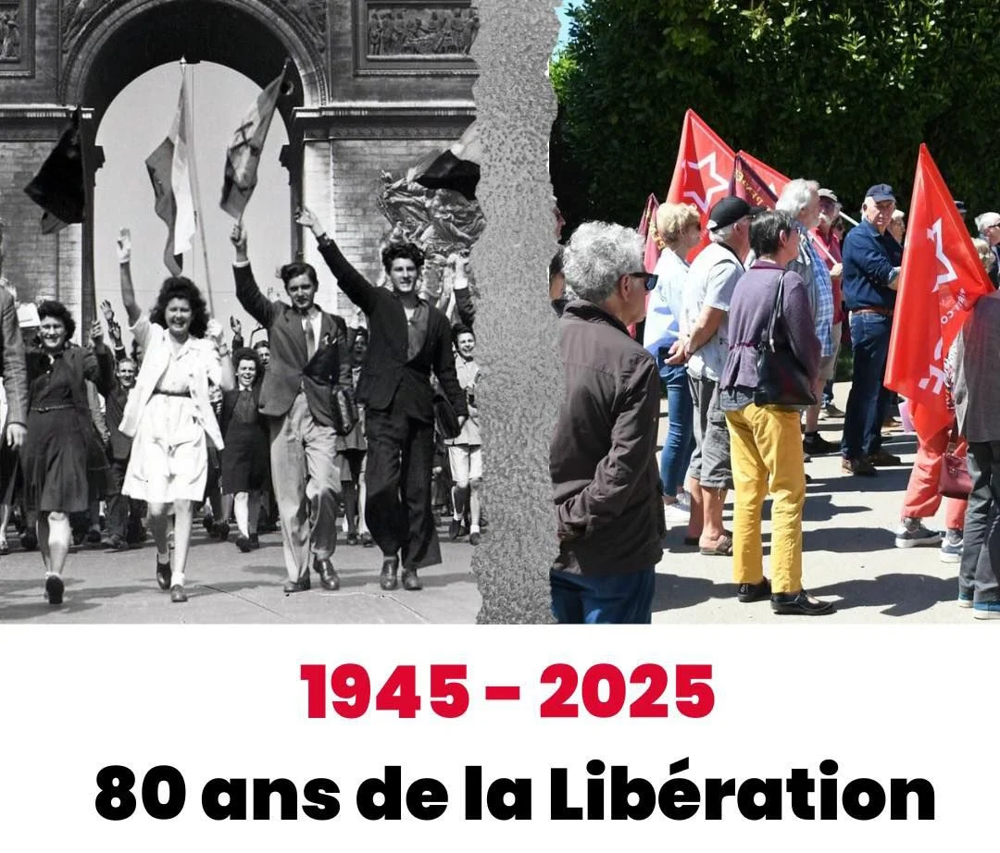

Publication d’archives
8 mai 1945 : 80 ans après
Date indiquée par Facebook · 8 mai 2025
Texte conservé avec la publication
8 mai 1945 : 80 ans après
Il y a 80 ans, la capitulation du nazisme mettait fin à une barbarie sans précédent. 80 ans après, les leçons de l’Histoire semblent vaciller.
Partout, les idéologies de haine refont surface. L’extrême droite progresse en Europe. Des peuples sont bombardés, niés dans leurs droits. Le négationnisme gagne du terrain.
Face à ces dangers, les communistes le réaffirment avec force : nous ne voulons plus jamais ça. Nous refusons l’oubli, nous choisissons la résistance, la paix et la justice.
Contexte du dossier
Le texte du 8 mai 2025 rappelle les quatre-vingts ans de la capitulation nazie et lie cette mémoire au combat contre l’extrême droite et les guerres. Il ne décrit pas de cérémonie particulière. Une publication ultérieure rapporte, elle, une montée au Mur des Fédérés au Père-Lachaise, à l’initiative des Amies et Amis de la Commune de Paris 1871. La différence compte : une réflexion commémorative et un événement rapporté ne sont pas interchangeables. Toutes deux font cependant vivre une histoire populaire qui refuse la résignation.

Sources
Archive rouge · export Facebook · AR-0002-FB-01125